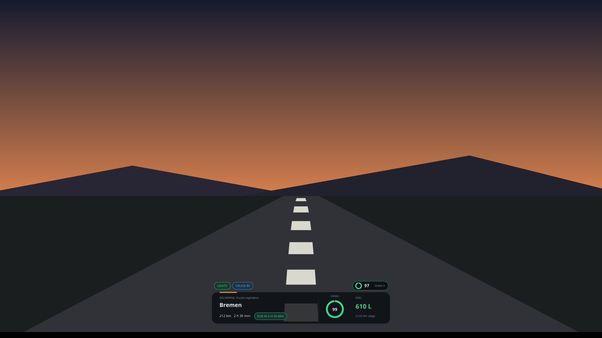
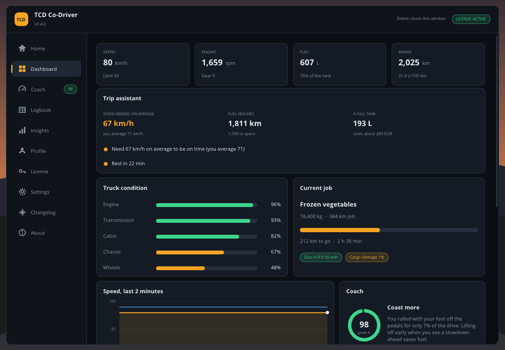
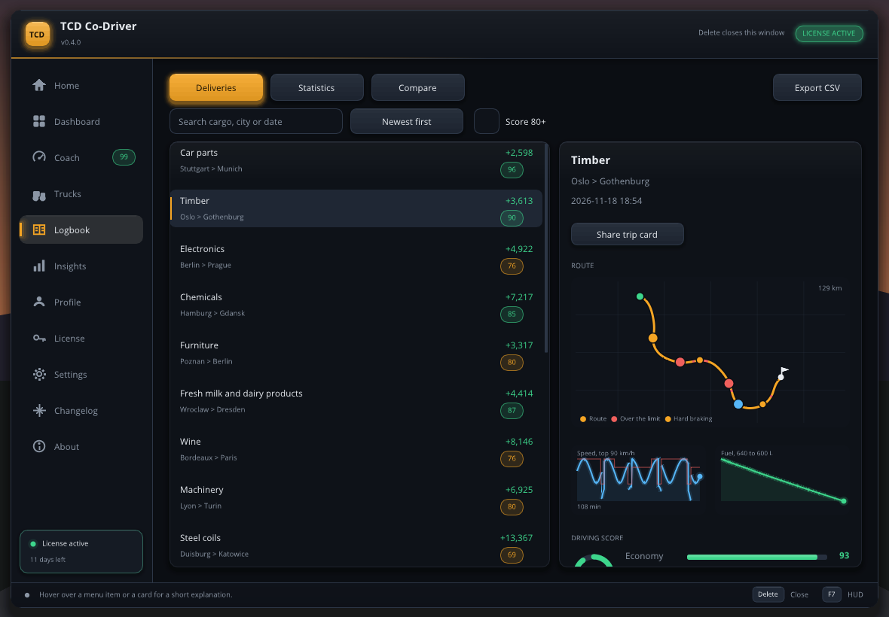
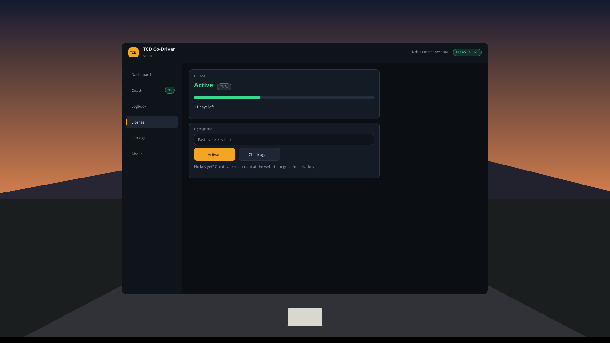

A co-driver for your cab.
TCD Co-Driver is a plugin that puts a clean heads-up display, live truck and job data and a logbook of every delivery inside the game. Free for 14 days, then $5 per month.
No card needed for the trial. Windows only.

The heads-up display (preview with sample data)
What is TCD Co-Driver?
A plugin for the game, not a separate program.
A small file you add to the game. Euro Truck Simulator 2 and American Truck Simulator share live information with plugins: your speed, engine rpm, fuel, damage, the job you are on, and what happens when you finish it. TCD Co-Driver reads that information and shows it back to you, inside the game window.
No second screen, no second app. It is built to draw directly in the game with the game's own graphics. While you drive you see a heads-up display. When you stop, one key opens a window with the details.
It only reads and shows. It does not change how the game plays. It adds no trucks, maps or cheats.
At a glance
- For: ETS2 and ATS on Windows
- What you get: a HUD, a live dashboard, a delivery logbook
- Controls: Delete opens the window, F7 shows or hides the HUD
- Cost: 14 days free, then $5 per month
- Version: 0.1, early and in testing
What it does
Built for the way you drive: glanceable while the truck moves, detailed when you stop.
Heads-up display
Big, sharp speed digits, the current speed limit, gear, rpm and fuel range. Warnings appear only when they matter: low fuel, parking brake, oil, temperature, battery, air pressure.
Live dashboard
Truck condition (engine, transmission, cabin, chassis, wheels), fuel and range, and your current job with progress, deadline and cargo damage.
Delivery logbook
Every finished job is saved on your computer with its route, income, distance and damage. Totals and income per kilometre at a glance.
Made to be adjusted
Metric or imperial, HUD size, opacity and position. Your settings are saved between sessions.
Coming next
Driving coach
A score for every trip: smooth braking and acceleration, speeding, fuel economy, idling, and a reminder before you need a rest stop. Tips after each delivery.
Online history
Keep your logbook and trip scores on your account, so they follow you to a new computer.
A look inside
The window opens with the overlay key, so it never gets in the way of driving. These are previews with sample data.



How it works
Three parts, none of them complicated.
1. The plugin
One plugin file in the game's plugins folder, plus a small open-source framework (hry-core, MIT license) that lets plugins draw on screen. An installer copies both and asks before it touches anything.
2. Your key
You need a license key. The plugin checks it with our license server when the game starts and every few hours. In between it works offline for up to a week, so a short outage never interrupts a drive.
3. The controls
Delete opens the overlay window, which also gives you the mouse. F7 shows or hides the HUD. Both can be changed in the framework's key bind page.
Getting started
- Create a free accountConfirm your email and your key is ready on your account page.
- Install the pluginRun the installer. The game asks once whether to allow the plugin, which is a normal part of how it handles plugins.
- Paste your keyOpen the overlay in the game, go to License and press Activate. Your trial days start now.
Simple pricing
Try everything first. Continue only if you like it.
Free trial
- Everything included
- The days start when you first use your key, not when you sign up
- We email you before it ends
Subscription
- Continue without a break
- One computer per key
- Your account and settings are kept if you stop
Good to know
- Early software. Version 0.1 is still in testing. Report problems and expect updates.
- Windows only. The plugin uses the game's Windows plugin system.
- Multiplayer is untested. Check the rules of any multiplayer service before using any plugin on it.
- What we store. Your email address, your key, and an anonymous code that identifies the computer the key is used on. You will be able to delete your account from your account page.
- Not affiliated with SCS Software. This is an independent plugin. Euro Truck Simulator 2 and American Truck Simulator are trademarks of SCS Software.
Questions
What do I need?
Euro Truck Simulator 2 or American Truck Simulator on Windows. The installer adds the plugin and the small open-source framework it runs on.
What happens when the trial ends?
The key stops and we send you an email. Your account stays, and you can continue with a subscription whenever you like.
How many computers can use one key?
One. If you get a new computer, contact support and the key can be moved.
Does it need internet while I drive?
It checks in when the game starts and every few hours. In between it works offline for up to a week.
Does it work in multiplayer?
That has not been tested yet. Check the rules of the service you play on first.
Where is my logbook kept?
On your own computer, in a plain text file. An online copy is planned for later.
Follow along
TCD Co-Driver is in active development. Sign-ups open soon, and this page will say so the moment they do.